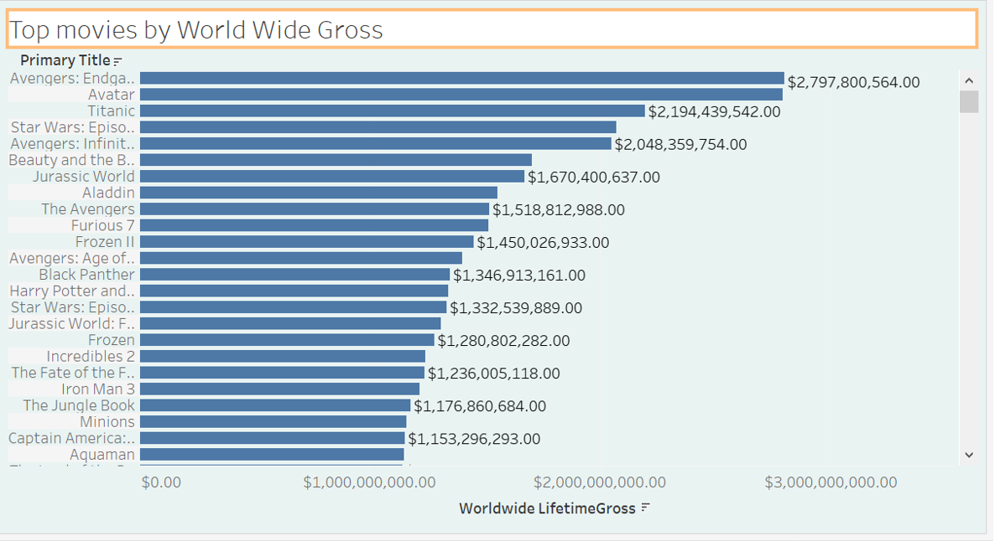
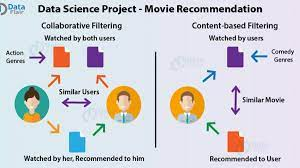
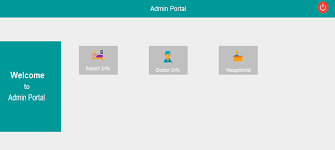
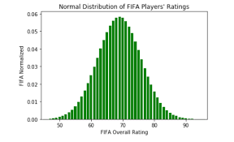

- Ingested initial datasets into ingestion schema(staging tables)
- Integrated data into integration schema(dimensional data model)
- Data loading into BI schema to better answer BI Business questions
- Performed data consistency & cleansing processes as appropriate
-
Designed and createed BI visualizations answering business questions

- Built a recommendation system using content-based, collaborative and hybrid filtering in Python on the MovieLens dataset
- Applied exploratory data analysis for visualizing data and investigating each component of the dataset
- Compared performances of SVD, KNN, TF-IDF algorithms on the basis of RMSE and evaluated their results after hyper-parameter tuning

- Built Database for system and loaded master data and transactional data through SSMS
- Implemented Stored Procedures, Functions, Triggers, and complex SQL joins to load and manipulate data
- Modeled ER diagram and normalized tables to 3NF to avoid data redundancy
- Generated self-explanatory reports and dashboard using Tableau to visualize the outcomes to gain an insights from the data

- A one stop responsive application for accessing all the medical facilities easily built in Java Swing with advanced Java concepts
- Entities included: Pharmacy, Laboratory, Emergency Ambulance Service, Vaccine Development, Hospital Appointment and FDA
- Implemented live location sharing, generation of entire patient history report, Email and SMS notification features using advanced JAVA concepts

-
Assimilated Big Data analysis and built predictive model to evaluate performance of the soccer player
- Implemented Linear Regression to predict and evaluate overall performance of the player and achieved RMSE as low as 2.87%
-
Incorporated best model selection for dataset and identified suitable algorithm using H2O autoML
- Identified Gradient Boosting model as best suitable for prediction as it helped to decrease RMSE by 21%
-
Visualized the data and results of analysis using Seaborn, Matplotlib libraries and exported to Excel (.csv) file